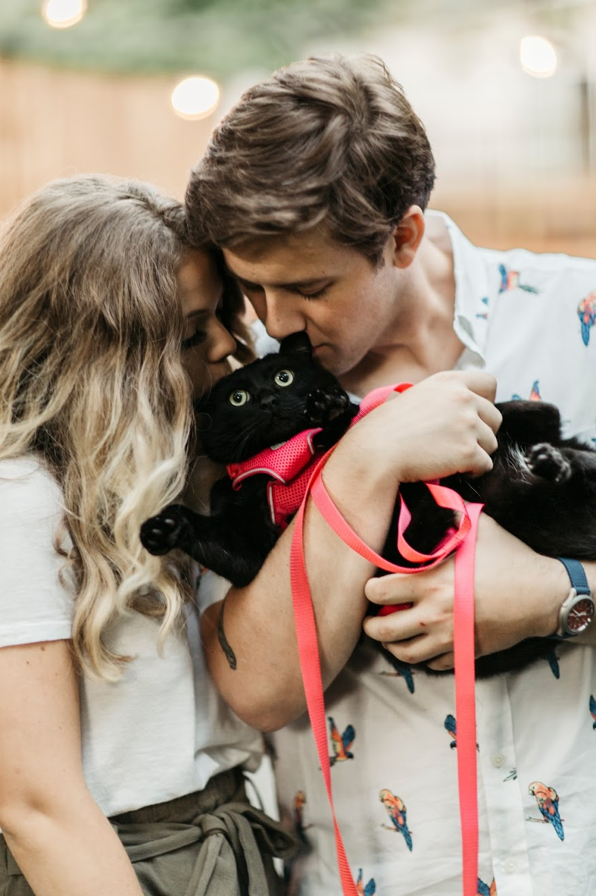

 Millie was rescued from the Pierce county humane society on March 5th, 2018. She is believed to be mostly a bombay. She is a black cat with white tufts on her chest. She has an extreme dislike of orange tabby cats.
Millie's least favorite thing is leaving her home. She has to take anxiety medication any time she goes into her cat carrier. It is a huge pain.
Meow meow meow